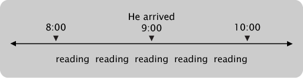
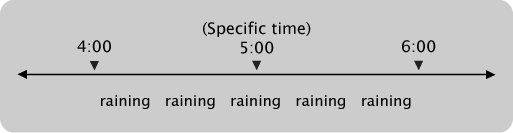
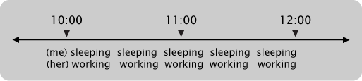

Past Continuous
Past Continuous
Introduction
The past continuous tense (also called the past progressive tense) is commonly used in English for actions which were going on (had not finished) at a particular time in the past. This page will explain the rules for forming the tense, and how it is used.
1. Forming the past continuous tense
This tense was formed using two components: the verb BE (in the past tense), and the -ING form of a verb. Here are the rules, using the example verb "sing":
| Subject | BE | -ING Form |
|---|---|---|
| I | was | singing |
| You | were | singing |
| He | was | singing |
| She | was | singing |
| It | was | singing |
| We | were | singing |
| They | were | singing |
2. When to use the past continuous
The past continuous is usually used when one action began before another, and finished after it. Consider this sentence:
I was reading when he arrived.
In other words I started reading (maybe at 8 o'clock), then he arrived (maybe at 9 o'clock), then I finished reading (maybe at 10 o'clock). Here is a diagram:

We can also use the tense when we talk about an action that had already started and was still continuing at a particular time:
At five o'clock, it was raining.
In other words it started raining (maybe at 4 o'clock), and finished raining later (maybe at 6 o'clock). Here is a diagram:

Finally, we can use this tense to describe TWO actions that were BOTH continuing at the same time in the past. In this case, we use the past continuous for both actions:
While I was sleeping, she was working.
In other words I started sleeping and she started working (maybe at 10 o'clock), and we both finished our actions later (maybe at 12 o'clock). Here is a diagram:

When you are sure that you understand the lesson, you can continue with the exercises.